10
Real-Time Tuning in Simulations
The Real-Time Tuning (RTT) assistant in ADE Explorer helps you edit the values of variables and parameters and the simulation results are dynamically updated to reflect the changes that have been made. In this mode, you can run the simulation once and fine-tune your results later by changing the variable values and simultaneously viewing the updated results. The output waveforms are displayed in the Virtuoso Visualization and Analysis XL graph window that can also open up as an assistant in ADE Explorer and displayed to the right of the ADE Explorer or design window. The output waveforms are updated as soon as you change the parameter values in the RTT assistant. You can also change the plotting mode to control the display of waveforms or compare waveforms generated after changing variable and parameter values. The available plotting modes are append, replace, new window, and new subwindow.
This section covers the following topics:
- Opening the Real-Time Tuning Assistant
- RTT Graphical User-Interface
- Working with the RTT Assistant
- Backannotating Variables and Parameters from RTT
- Viewing Results in Virtuoso Visualization and Analysis XL
- Running RTT with Other Simulators
- Viewing Legend in Info-Balloons and ViVA Graph Assistant
- Viewing Waveform Info-Balloons on Schematic
Opening the Real-Time Tuning Assistant
The Real-Time Tuning pane opens as a dockable assistant in schematic and Explorer. By default, when you launch this assistant, it is displayed on the schematic tab. You can click the maestro tab to view this assistant in ADE Explorer.
You can open the RTT assistant through one of the following ways:
- From Virtuoso ADE Explorer:
-
From the Virtuoso ADE Explorer Schematic Window:
- Click the button available on the Schematic toolbar.
- Choose Launch – Plugins – Real Time Tuning.
-
Select
Real Time Tuningin the Workspace toolbar.
The Real Time Tuning assistant appears to the left of the Schematic or Explorer window as shown in the below figure.
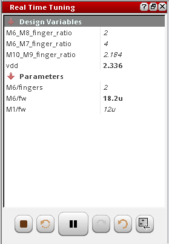
In addition, the specifications are not evaluated when you are in the RTT mode.
For more information about how to work with the RTT mode, see the next sections.
RTT Graphical User-Interface
The below figure demonstrates the RTT graphical user-interface and its main elements:
Working with the RTT Assistant
Consider the setup shown in the figure below in which you define the AC and DC analyses, four design variables and four parameters:
Now, open the Real Time Tuning assistant using the steps explained in the Opening the Real-Time Tuning Assistant section. The schematic view appears and Real Time Tuning assistant is displayed with the following values:
The Tuning menu also appears when the Real Time Tuning assistant is displayed. This menu includes the following commands:
In the Real Time Tuning assistant, perform the following steps to tune the design and view the updated waveforms instantly in the graph window:
-
Click the Play button to put the simulator into listening mode, which means RTT is ready to action according to the design and parameter values you change. When the play button is clicked, an animated spinner appears on this button, which indicates the progress of the simulation run. In addition, the status is also displayed in the status bar at the bottom, indicating the simulation stages, such as simulating, plotting and so on.
When RTT is opened for the first time, clicking this button first runs the simulation on the values defined in the Setup and plots the results in the graph window.When the simulator is in listening mode and you perform some changes in the design, if you change the variable and parameter values in RTT assistant, the simulation will now run on the updated design.When the simulation is complete, the button icon is changed to a pause button . -
In the next step, update the design variables and parameters values through one of the following ways:
-
Use the slider bars available for each variable and parameter, which appear when you hover mouse pointer over a value. These bars display the minimum and maximum range values that can be specified for the selected variable. You can drag the slider in between these values and when you drop, the value of the selected variable is updated. To change the range values, double-click the displayed value and type a new value. By default, the slider bar for only selected variable or parameter appears. To display all the slider bars, set the following .cdsenv variable to
t:
envSetVal("maestro.rtt" "sliderOnMouseOver" 'boolean "nil") -
Double-click the value displayed for the selected design variable or parameter and type the new value. You can also type a value greater than the maximum range displayed on the slider bar. The new value is displayed with red background as shown in the figure below. If this specified value is valid, the simulation runs successfully.
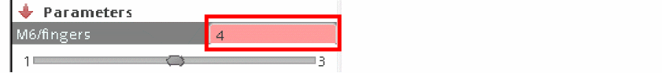
After changing the value for a parameter or a design variable, if you want to change the value with the one specified in the design, double-click in the value field. A button appears as highlighted in the below figure. Click this button to replace the displayed value with the original value. You can also double-click the specified maximum and minimum values in the slider bar and then specify new values.
Ensure that the maximum value you specify is greater than the given minimum value. Similarly, minimum value should be less than the given maximum value. Otherwise, an error message appears.
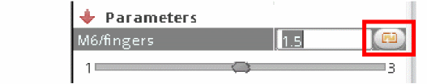After you change a value, if you place the mouse pointer on the changed value, a tooltip appears that shows the parameter or variable name, its new and the original values.
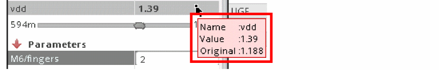When you change the variable or parameter value, the updated value is passed to the simulator and an instant simulation run takes place. This simulation is fast because the simulation run does not generate the netlist again.
If the parameter you are tuning is a sweep parameter, then the minimum and maximum values are displayed at the two ends of the slider bar and you can move the slider to select values based on the specified step size. For example, in the below figure, for parameterV2/vo, the sweep defined is10:2:20. The slider bar shows minimum value as10, maximum value as20, and you can specify only values that are at the interval of2, such as 12, 14, 16, 18. The maximum of 100 points (step values) can be selected through the slider.
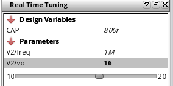To set the path of simulation results directory where the intermediate simulation results are saved for the changed values, you can set the following environment variable in CIW or.cdsinitfile:
envSetVal("maestro.rtt" "useCustomizedSimDir" 'string "./")
If you do not set this variable, simulation results are saved at the default memory location,/dev/shm/simulation/<lib>/<cell>/spectre/<view>. -
Use the slider bars available for each variable and parameter, which appear when you hover mouse pointer over a value. These bars display the minimum and maximum range values that can be specified for the selected variable. You can drag the slider in between these values and when you drop, the value of the selected variable is updated. To change the range values, double-click the displayed value and type a new value. By default, the slider bar for only selected variable or parameter appears. To display all the slider bars, set the following .cdsenv variable to
-
When the simulator is in listening mode, the play button is changed to a pause button. This indicates that you can change only one value at a time and plots are updated in the graph window accordingly. To change multiple values together, click the pause button again. The button icon is changed as shown in the figure below. This indicates that the simulation run is on hold and does not happen every time when you change a value.
Now when you are done with all the changes, click this button again to continue the simulation run.
At any point of time, you can click the stop simulation button ( ) to bring back the play button to its default value and stop running simulation after the values are changed.
To bring back the previous values, use the Undo and Redo buttons available at the bottom of the assistant.
After changing values, if you want to bring back the default values from the previously-saved setup, click the Load values from Setup button ( ). -
As soon as you update the values in RTT, the updated simulation results are plotted in the Virtuoso Visualization and Analysis XL graph assistant. You can also set the following environment variable in CIW or
.cdsinitfile to open graph as a window in Explorer.
envSetVal("viva.application""vivaWindowMode"'string "window")
The default value is:
envSetVal("viva.application""vivaWindowMode"'string "assistant")
By default, the graph assistant is displayed at the right of the ADE Explorer window.
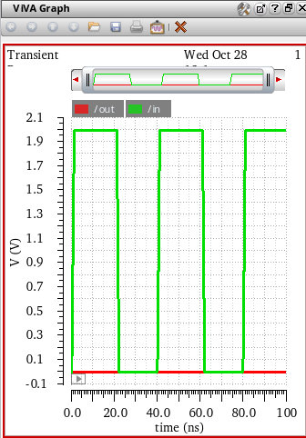You can use the drop-down menu ( ) available on the toolbar to change the mode in which you want to display output waveforms. The available modes are Append, Replace, New Window and New Subwindow. For more information about the ViVA graph assistant, see Virtuoso Visualization and Analysis XL User Guide.
You can also view the updated simulation results in waveform info-balloons displayed on the schematic design. For more information, see Viewing Waveform Info-Balloons on Schematic.
The nets in the schematic are displayed in the same color as that of the waveform plots in the graph window. See the yellow highlights in the figure below.
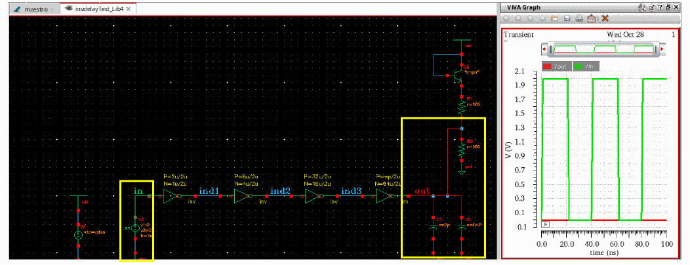
Backannotating Variables and Parameters from RTT
After tuning the design using the Real Time Tuning assistant, values of the updated parameter and design variables are displayed in bold, as shown in the following figure..
-
To send these updated values back to ADE Explorer and the schematic, select one of the following options from the Save back drop-down menu:
-
Explorer: updates the values of design variables and parameters in the setup assistant.
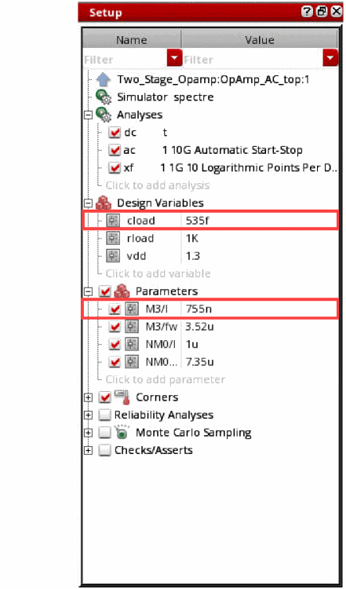 -
Backannotate: Updates the parameter values in the schematic.
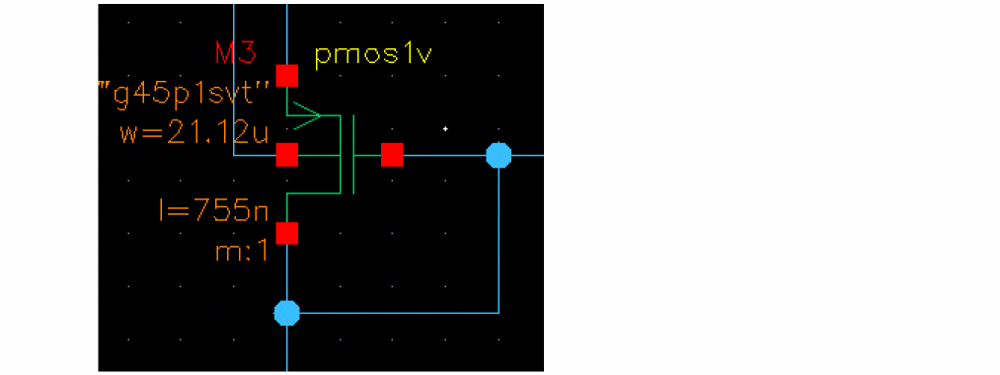 -
Explorer and Backannotate: Updates the values of the design variables and parameters in the setup assistant, and that of parameters in the schematic.You can control the default selection by setting the value of the environment variable, saveToMode.
-
Explorer: updates the values of design variables and parameters in the setup assistant.
-
Click Save back.
The following dialog box is displayed.
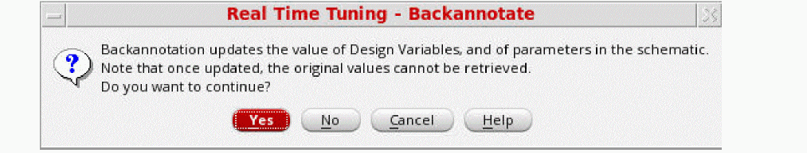 - Click Yes to confirm the changes.
Some Useful Points
- When you click the Save back button in RTT assistant, only the updated design and parameter values are transferred back into the original setup. RTT does not send the updated results to the ADE Explorer setup. In order to view the updated results in ADE Explorer window, you need to rerun the simulation.
- When you are in the RTT mode, the context-sensitive options are not displayed when you right-click a column in the Outputs Setup pane, except for the Value column. In addition, the Results – Save option is not available in the RTT mode.
- RTT simulation does not evaluate the outputs of type OCEAN.
-
If reliability is enabled when you use RTT assistant to modify the design, the Spectre batch mode is used to run the RelXpert simulation and the following message is displayed:
*Info* Spectre SKI interactive mode is disabled in RTT because RelXpert setting is enabled. Automatically setting the run mode to batch.
-
In the RTT mode, the trace legend displays the parameter values along with the trace name. The trace legend for the waveform info-balloon on schematic also works in the similar way. When the legend is positioned at left or top, tooltip on the trace name in legend displays the trace name, parameter names and values in separate lines, as shown in the figue below.
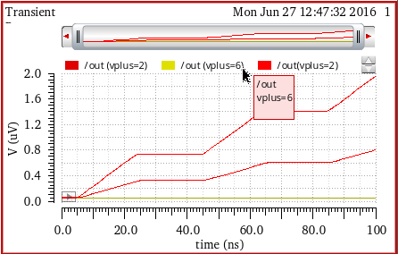
Viewing Results in Virtuoso Visualization and Analysis XL
When the simulation run is complete, the plots are updated in Virtuoso Visualization and Analysis XL Graph. When the vivaWindowMode environment variable is set to Assistant, the ViVA graph assistant appears to the right of the Explorer or design window.
When you are working with the RTT mode in Schematic Editor, the Virtuoso Visualization and Analysis XL graph appears as shown in the figure below:
After changing the values in RTT assistant, you can zoom in a graph portion to view and analyze results at specific points on the graph. Now, if you change a parameter in the RTT assistant, the graph is updated as per the new values and is displayed with the same zoom settings that you set previously.
For information about the graphical-user-interface of ViVA Graph assistant, see ViVA Graph Assistant.
Running RTT with Other Simulators
When you use Spectre from MMSIM14.1ISR3 release or onwards (with or without APS mode enabled), the RTT assistant works in the interactive mode. The netlist and full simulation run take place only for the first time when you click the Play button. After that when you change the parameter or variable values in the assistant, the instant simulation run takes place and the corresponding output waveforms are simultaneously updated in the ViVA XL Graph assistant or in the waveform info-balloons on schematic.
When you use a Spectre version older than MMSIM14.1ISR3 release or use any other simulator, such as AMS, HSPICE, UltraSim, the RTT runs in a batch mode. This means, every time when a value is changed, a new netlist is generated and full simulation run takes place. Due to this reason, the simulation is slower and you may notice a delay in the display of output waveforms in the ViVA XL Graph assistant and info-balloons on schematic. A warning message is also displayed informing that maximum tool performance can be achieved only if you use Spectre from MMSIM14.1ISR3 release or onwards.
Viewing Waveform Info-Balloons on Schematic
After a simulation run is complete, the output expressions are evaluated and resultant waveforms are plotted in the Virtuoso Visualization and Analysis XL graph. You can also view these waveforms in the schematic design in the form of waveform info-balloons or thumbnails.
This section covers the following topics:
- Enabling Waveform Info-Balloons
- Moving and Resizing Waveform Info-Balloons
- Pinning Waveform Info-Balloons
- Changing Analysis Type for Waveform Info-Balloons
- Using Waveform Info-Balloon Context-Sensitive Menu Options
- Viewing RTT Simulation Results in Waveform Info-balloons
Enabling Waveform Info-Balloons
To enable the display of waveform info-balloons in schematic, do one of the following:
- Choose View – Info Balloons.
-
Press the bindkey
Ctrl+B. -
In the schematic window, click the Show/Hide Balloons drop-down (
) and select Waveforms.
After the simulation run is complete, the info-balloons appear when you place the pointer over a terminal or an instance associated with the waveform, as shown in the figure below.
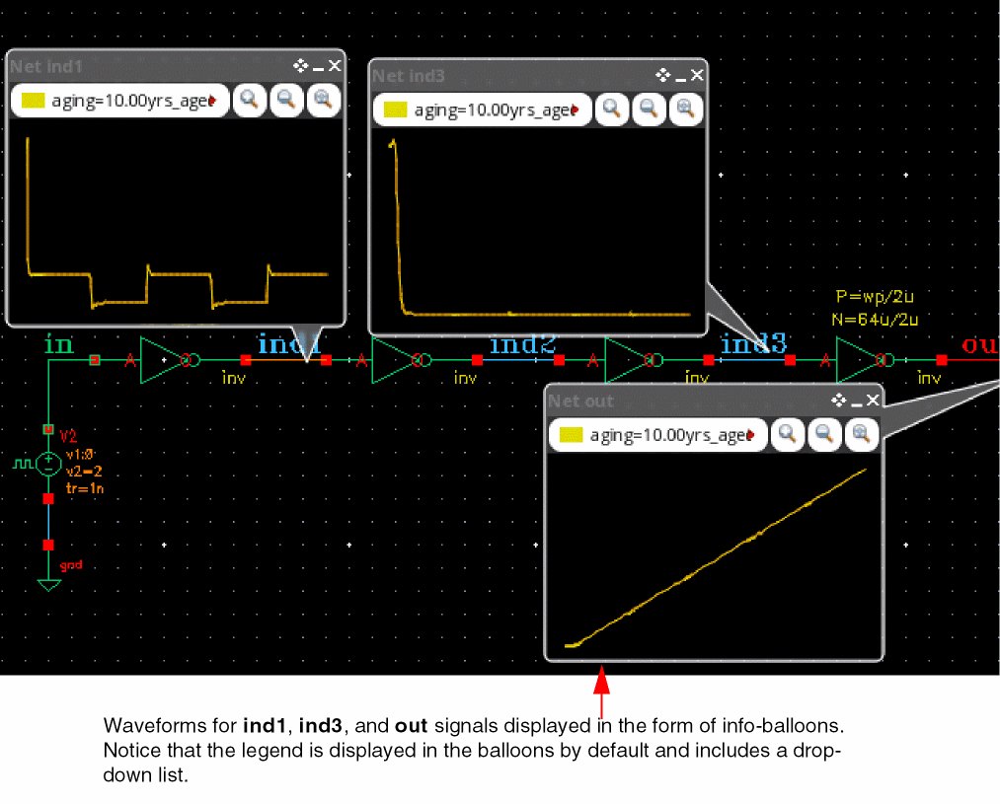
Notice that info-balloons in the above figure display a drop-down for the legend inside the trace. This drop-down includes a list of waveforms generated for the sweep values for each leaf. When the simulation includes sweep variables, the legend drop-down displays a list of waveforms generated for all sweep values. This drop-down also maintains a history of waveforms generated for the previous simulation runs.
In addition, the Zoom in by 2, Zoom out by 2, and Zoom Fit buttons are displayed in the info-balloon.
Moving and Resizing Waveform Info-Balloons
You can move or resize only pinned waveform info-balloons. To move and resize the waveform info-balloon, do one of the following:
- Drag the waveform info-balloons using the pointer to change their current position and increase or decrease their size.
- Click the Balloon Setup Form button ( ) on the toolbar.
-
Click the Annotation Setup form button (
) and choose Setup – Balloon Setup.
The Balloon Options form appears as shown in the figure below:
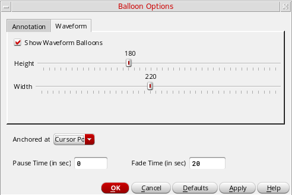In this form, click the Waveform tab and then select the following options to display, hide, and resize the waveform info-balloons:- Show Waveform Balloons—Enable the display of waveform info-balloons when you place the poinyter over an instance.
-
Height—Drag the slider bar to set the maximum height of the balloon that can be displayed on the schematic canvas. The default height is
160. -
Width—Drag the slider bar to set the maximum width of the balloon that can be displayed on the schematic canvas. The default width is
200. -
Anchored At—Select the position at which the info-balloon is to be displayed when you place the cursor on any instance on the schematic. The available options are:
Cursor Position,Top Left Corner,Top Right Corner,Bottom Left Corner, andBottom Right Corner. - Pause Time (in sec)—Specify the time taken for an info-balloon to appear when you place the pointer over an instance in the schematic.
- Fade Time (in sec)—Specify the time taken for an info-balloon to disappear when you place the pointer over an instance in the schematic.
The axis scale and labels appear when a waveform info-balloon is resized, as shown in the figure below. If the info-balloon size is set to198x205or larger, the axes are displayed by default.
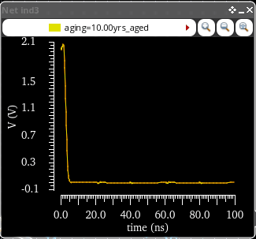
Pinning Waveform Info-Balloons
By default, you can view only one info-balloon at a time because they are displayed only when you place the pointer over an instance. If you want to view and analyze more than one waveform in the design, you can pin the selected info-balloons so that they continue to display.
To pin the info-balloon for a particular instance, do one of the following:
- Click the Pin button ( ) displayed on the header of waveform info-balloon.
-
Press bindkey
Shift+B. - When you move the mouse pointer over a net, if the pointer changes, you can left-click to pin the info-balloon at the selected position.
Clearing Pinned Waveform Info-Balloons
To clear waveforms displayed in the pinned info-balloons:
-
Click the Clear Waveform Balloons button (
) on the Annotations toolbar in schematic window.
After you click this button, all the waveforms displayed in the pinned waveform info-balloons are removed and the info-balloons appear blank.
Changing Analysis Type for Waveform Info-Balloons
The waveform info-balloons display the plots for only one analysis at a time. To change the type of analysis, select the required analysis type in the drop-down list available on the Annotations toolbar.
The waveform info-balloons for only the selected analysis are displayed in the schematic.
For example, if you choose ac analysis type in the drop-down list, the new info-balloon you add shows the plots for AC analysis and all pinned balloons are also changed to show the plots for AC analysis. You can use the Freeze Analysis option to lock the analysis type, which is explained in the next section.
Using Waveform Info-Balloon Context-Sensitive Menu Options
When you right-click anywhere in the waveform info-balloon, the following context-menu options appear:
- Zoom In—Zooms in to the trace.
- Zoom Out—Zooms out from the zoomed-in trace.
- Zoom Fit—Fits the trace to the graph area.
- Pan Left—Pans the trace to the left-side of the graph.
- Pan Right—Pans the trace to the right-side of the graph.
- Display Legend—Controls the display of legend in the info-balloon. It is enabled by default.
-
Freeze Analysis—Locks the analysis type for the traces displayed in waveform info-balloon. When you click the Freeze Analysis option, a lock symbol (
) appears at the topmost left corner of the info-balloon, which indicates that the current trace is locked for the selected analysis type and does not update if you choose a different analysis. The traces that do not have the Freeze Analysis option enabled are updated with a change in the analysis type.
- Send To ViVA—Sends the trace displayed in the waveform info-balloon to Virtuoso Visualization and Analysis XL window.
Viewing Legend in Info-Balloons and ViVA Graph Assistant
When you run a single-point simulation, the legend on the waveform info-balloons display the name of the net. If you run a multi-point simulation, the legend also display the sweep values along with the net names.
Consider an ADE Explorer setup in which you have the following three design variables:
Now, if you run a simulation, the output waveforms are plotted in the ViVA Graph assistant and also displayed in the waveform info-balloons, as shown in the figures below. The color of waveforms in the info-balloon is same as that of the color in the ViVA Graph assistant.
Now, if you change a variable value, say vplus to 3.0, and rerun the simulation, the waveforms are updated in the ViVA Graph assistant and the pinned waveform info-balloons. When the plotting mode is set to append, notice that the legend drop-down in the ViVA Graph assistant and info-balloons display both the new (3) and previous (2.8) values of the changed variable, vplus. The other two design variables remain unchanged, and therefore, are not displayed in the legend.
If you specify a sweep for the vplus design variable (vplus=0:2:6), the waveform info-balloons display the waveforms generated for sweep values and the name of the net, as shown in the figure below.
The color of waveforms in the info-balloon is same as that displayed in the ViVA Graph assistant. Also, if you select a waveform in the info-balloon, the same waveform is highlighted in the ViVA Graph assistant. For example, in the above figure, the out signal at vplus=4 is highlighted in the waveform info-balloon and ViVA Graph assistant.
Viewing RTT Simulation Results in Waveform Info-balloons
After updating the design variables and parameter values in the RTT assistant, you can view the output waveforms instantly in the ViVA Graph assistant. If the waveform info-balloons are enabled in the schematic design and you change a variable and parameter value using RTT assistant, the plots in waveform info-balloons are also updated to reflect the change in output waveforms. These updated waveforms in info-balloon are plotted in different colors in append mode. The highlighted waveform color shows that this waveform is generated by the recent simulation run.
When you tune the design in RTT, the legend drop-down in the info-balloon includes the previous and new values of the variables you changed. For example, consider an example in which you have three design variables, CAP=230u, wp=100u, and vplus=2.8u, in the ADE Explorer setup. When you click the Play button for the first time, a simulation run takes place. The legend of the output waveforms in the ViVA graph assistant and info-balloons display only the net name. Now, if you change a variable, say wp to 107u and vplus to 4, the info-balloon legend drop-down includes both the old and new values as shown in the below figure:
The third variable, CAP, is not displayed in the legend because its values are not bechanged. Now, if you change the value of other variable, say CAP, the legend displays the previous and new values of all the changed variables. In addition, when you can select one of the waveforms in the legend drop-down list, the corresponding plots are selected in the info-balloon and in ViVA Graph assistant.
Notice that the color of waveforms from the previous runs becomes dimmer every time when a new simulation is run. The waveform with the brightest color indicates the latest plot. Alternatively, you can set the dimSameColor environment variable to nil to display these waveforms in different colors. The default value of this variable is t.
Similarly, the ViVA Graph assistant legend also displays the values for only changed variables (see the figure below).
- The plots for the updated results are displayed only when the waveform info-balloons are pinned.
- The waveform info-balloons are not currently supported for bus terminals. If you try to add a waveform info-balloon on a bus terminal, an information message is displayed in CIW.
Return to top